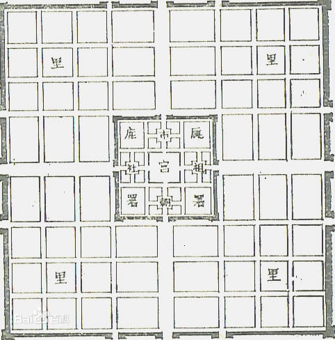
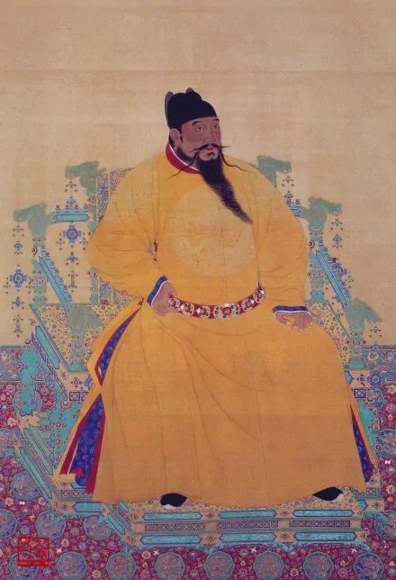
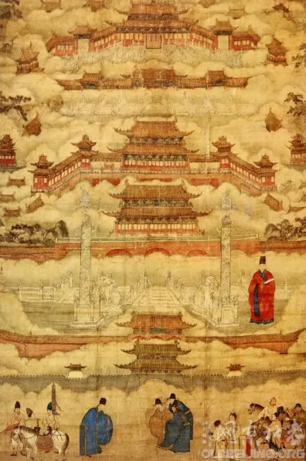
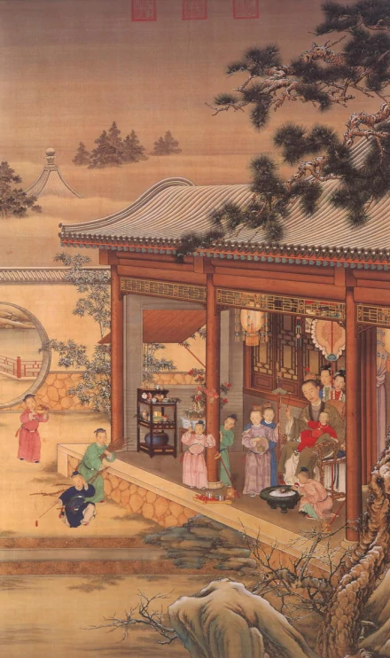
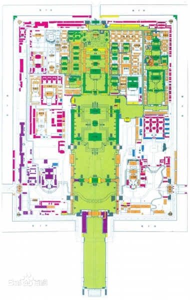

渤海大学的历史沿革

渤海大学的办学历史始于1950年创建的辽西工农速成中学，校址位于锦州，是新中国成立初期为培养工农干部和专业技术人才设立的新型学校。1958年，为适应辽西地区基础教育发展需求，学校升格为锦州师范专科学校，开设中文、数学、物理等师范类专科专业，开启正规师范教育历程。
1962年，学校更名为锦州师范学院（专科），期间虽历经调整，但始终坚守师范教育主业。1977年恢复高考后，学校正式升格为本科院校，定名为锦州师范学院，首批招收汉语言文学、数学等8个本科专业学生，成为辽西地区重要的师范人才培养基地。1983年，学校开始与辽宁师范大学联合培养硕士研究生，为后续硕士点申报奠定基础。

1989年，锦州师范学院与锦州师范专科学校合并，整合师范教育资源，学科专业结构进一步优化，新增教育学、心理学、英语教育等特色专业。1993年，学校成功获批硕士学位授予权，中国语言文学、数学两个学科成为首批硕士点，实现办学层次重大跨越。
2000年，辽宁省高校布局调整，锦州师范学院与辽宁商业高等专科学校合并组建新的锦州师范学院。辽宁商业高等专科学校前身为1951年创建的锦州商业技术学校，拥有深厚的商科办学底蕴，合并后学校形成“师范+商科”双轮驱动的办学格局，新增工商管理、食品科学与工程、市场营销等应用类专业，办学领域从单一师范拓展至多学科协调发展。

2003年4月，经教育部批准，锦州师范学院正式更名为渤海大学，寓意“立足渤海之滨，服务区域发展”，学校定位为多科性省属重点大学，标志着办学进入全新发展阶段。更名后，学校确立“厚德博学、求是创新”的校训，明确“师范底色、应用特色”的办学方向。
2007年，学校通过教育部本科教学工作水平评估并获优秀成绩。2008年，位于锦州滨海新区的新校区建成启用，校园占地面积达2250亩，建筑面积60余万平方米，教学科研设施显著改善。期间，学校新增多个硕士学位授权点，学科覆盖教育学、文学、理学、工学、管理学等门类，全日制在校生规模突破15000人。

2013年，渤海大学获批为辽宁省人民政府与国家海洋局共建高校，依托渤海地区海洋资源优势，重点发展海洋技术、环境科学、水产养殖等相关学科，新增海洋科学类专业，形成特色学科增长点。2016年，学校入选辽宁省首批转型发展试点高校，聚焦应用型人才培养，深化产教融合，与地方企业共建20余个产学研合作基地。
这一时期，学科建设成效显著：教育学、中国语言文学、数学被列为辽宁省重点学科，食品科学与工程、计算机科学与技术成为省级优势特色学科；2018年，学校获批博士学位授予单位立项建设高校，启动教育学、数学等博士点建设。科研方面，承担国家级科研项目数量年均增长15%，多项成果获辽宁省科技进步奖、哲学社会科学优秀成果奖。
2021年，渤海大学顺利通过博士学位授予单位立项建设中期评估，学科实力持续提升。学校主动对接国家战略和辽宁全面振兴需求，新增人工智能、大数据管理与应用、智能制造工程等新兴专业，推进学科专业一体化建设，形成适应新时代发展的学科专业体系。
截至2024年，学校设有20个二级学院，53个本科专业，18个一级学科硕士学位授权点，10个专业硕士学位授权类别；全日制在校生23000余人，其中硕士研究生3000余人；教职工1900余人，高级职称教师占比42%，博士学位教师占比58%。学校先后荣获“全国文明校园”“辽宁省五一劳动奖状”“辽宁省普通高等学校就业工作先进集体”等荣誉，成为东北地区有重要影响力的多科性大学。

建校70余年来，渤海大学始终坚守“为党育人、为国育才”初心，累计培养各类毕业生30余万人，其中80%以上扎根辽宁及东北地区，在教育、科研、企业、政府等领域建功立业，被誉为“辽西地区人才培养的摇篮”。学校坚持“立足辽宁、服务渤海、辐射全国”的服务定位，在基础教育改革、区域产业升级、文化传承创新等方面贡献突出。
在教育服务方面，学校长期承担辽宁省中小学教师培训任务，培训骨干教师10万余人次；在科研转化方面，聚焦农产品深加工、智能装备研发等领域，技术成果转化金额累计超5亿元；在文化传承方面，成立辽西历史文化研究中心，多项研究成果为地方文化旅游发展提供支撑。当前，学校正朝着“特色鲜明、国内知名的高水平应用型大学”目标稳步迈进。